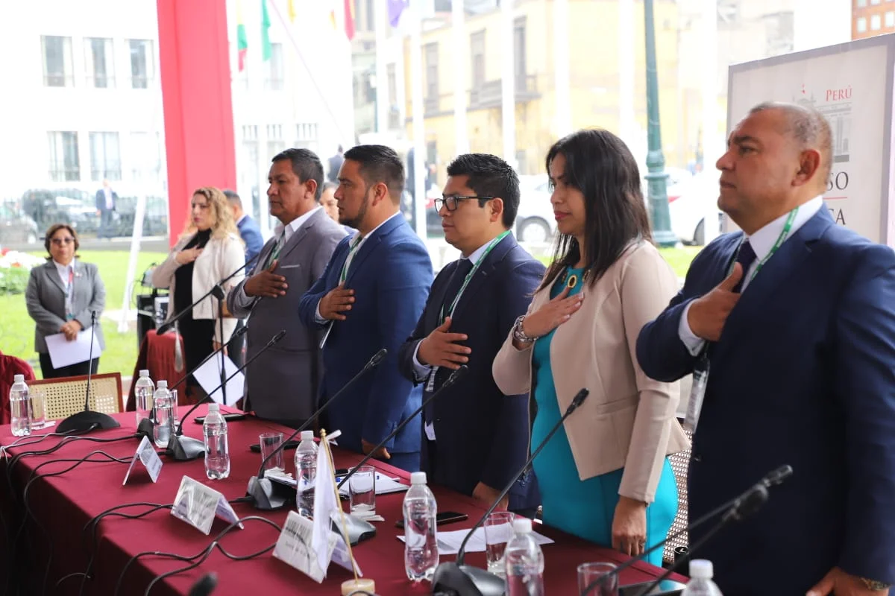
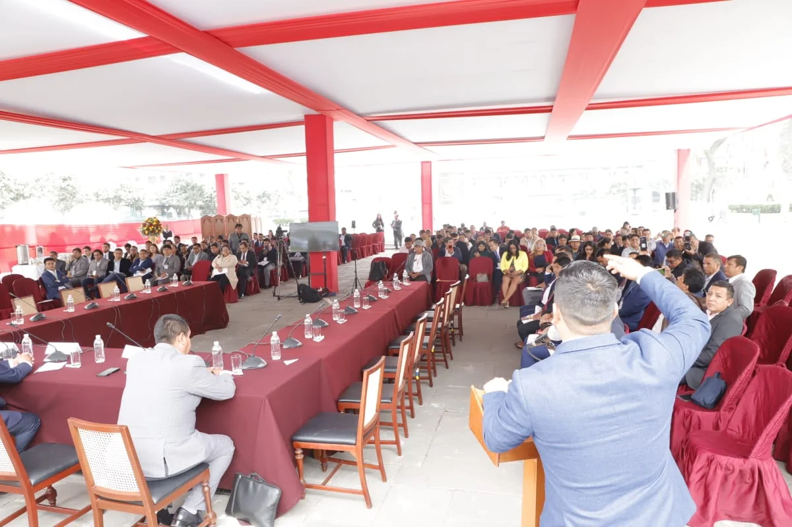

Noticia
17 septiembre, 2025

La XVII Conferencia Anual de Municipalidades del Perú (CAMUR 2025) se llevó a cabo en el Congreso de la República con el objetivo de definir una agenda común frente a la paralización de obras y la necesidad de fortalecer la descentralización presupuestal.
En las instalaciones del Congreso de la República se desarrolló la XVII Conferencia Anual de Municipalidades del Perú (CAMUR 2025), organizada por la Red de Municipalidades Urbanas y Rurales del Perú (REMURPE), con la presencia de alcaldes y alcaldesas de diversas regiones.
Durante la jornada, se abordaron los principales problemas que enfrentan los gobiernos locales, especialmente la paralización de obras de infraestructura básica en todo el país, como caminos, colegios, postas médicas y sistemas de agua y saneamiento. La falta de presupuesto fue identificada como la causa central que limita la culminación de proyectos vitales para las comunidades.
El encuentro fue liderado por los directivos de REMURPE, encabezados por su vicepresidente Héctor Lolo Antonio, el secretario de Economía Herminio Vásquez Montenegro y la gerenta general Cristina Chambizea Reyes; junto con el presidente del Congreso de la República, José Jeri, y el tercer vicepresidente del Parlamento, Ilich López Ureña.
Asimismo, participaron autoridades municipales de distintas regiones del país, entre ellas: Víctor Prado Estrella (Ayacucho), José Manuel Figueroa (Áncash), Edinson Reátegui (San Martín), José Carlos Quiróz (Cajamarca) y Uriyas Saruc (Amazonas). También estuvieron presentes los representantes de CEPLAN, Marco Condori Lozano y Sergio Vilchez, quienes expusieron sobre los retos de la planificación en el marco de la distribución del FONCOMUN.

En el Pleno Municipal, los participantes destacaron la necesidad de fortalecer el liderazgo político de los alcaldes y alcaldesas como actores fundamentales en la construcción de una democracia más cercana a la ciudadanía y en la descentralización efectiva del país.
La XVII CAMUR 2025 concluyó reafirmando la unidad del municipalismo peruano frente a los retos de gestión y financiamiento, bajo el compromiso de defender el derecho de las comunidades a acceder a obras y servicios básicos con justicia y equidad. El presidente del Congreso anunció la pronta realización de un histórico Pleno Municipal.